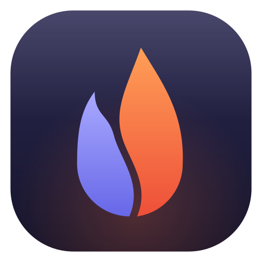
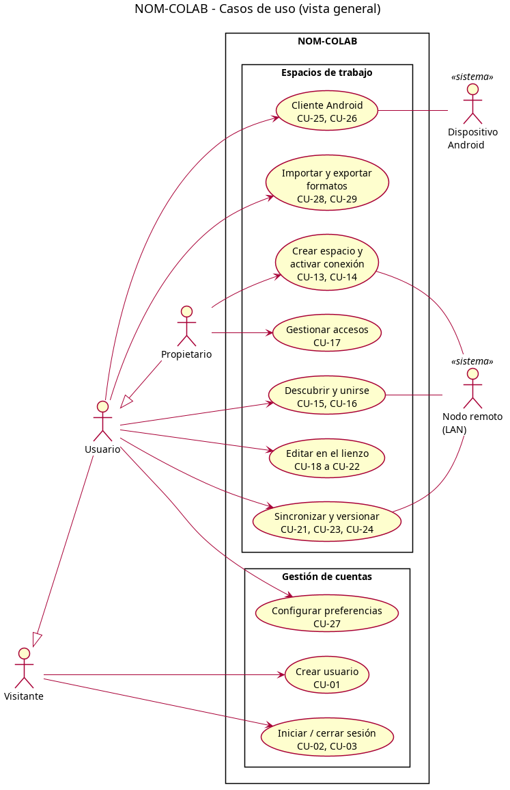
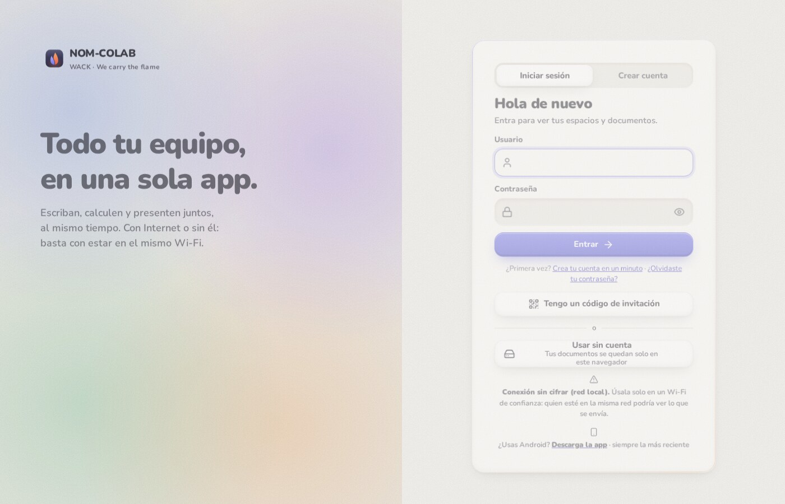
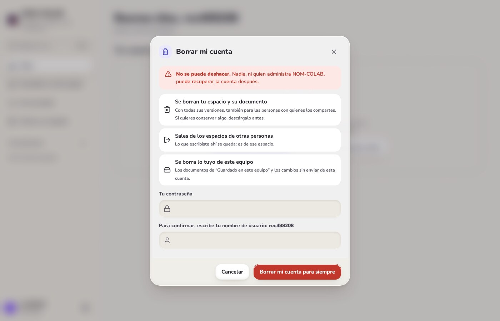
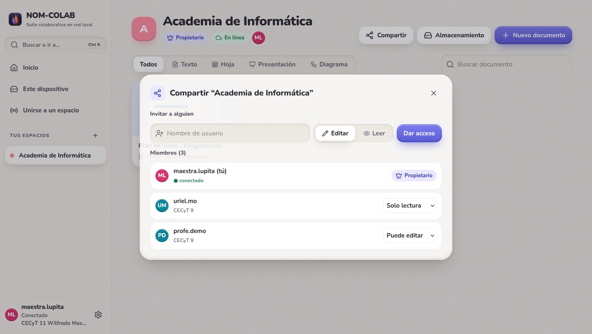
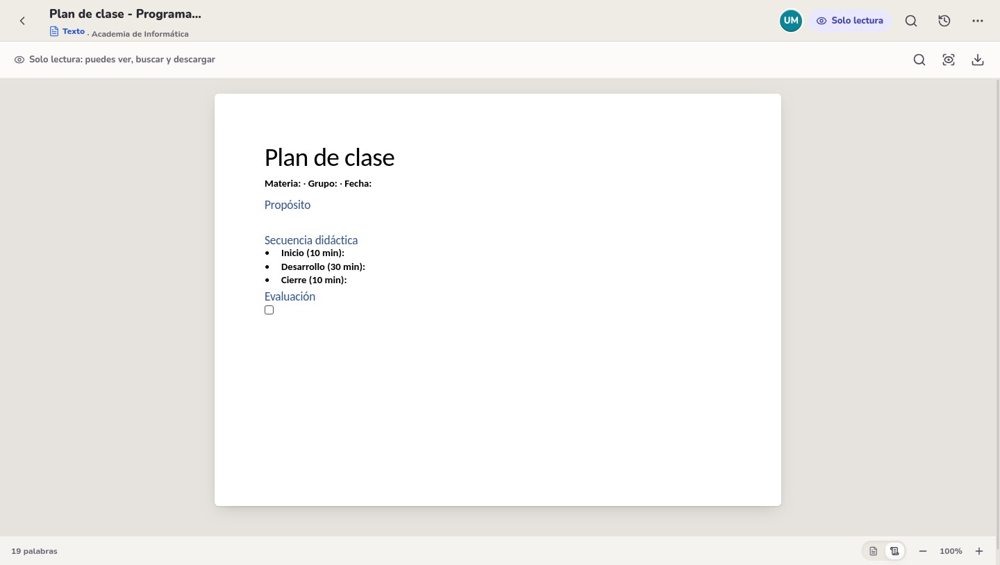
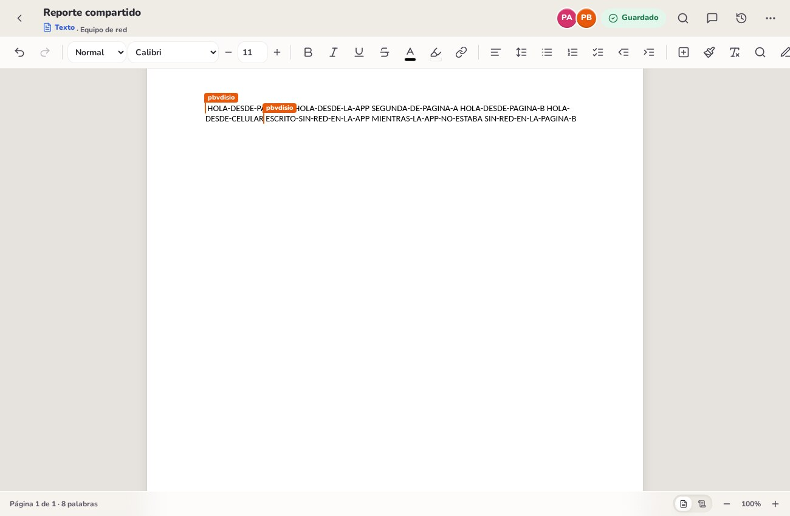
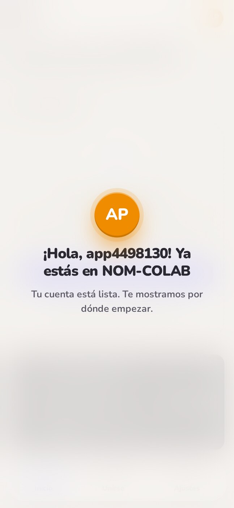
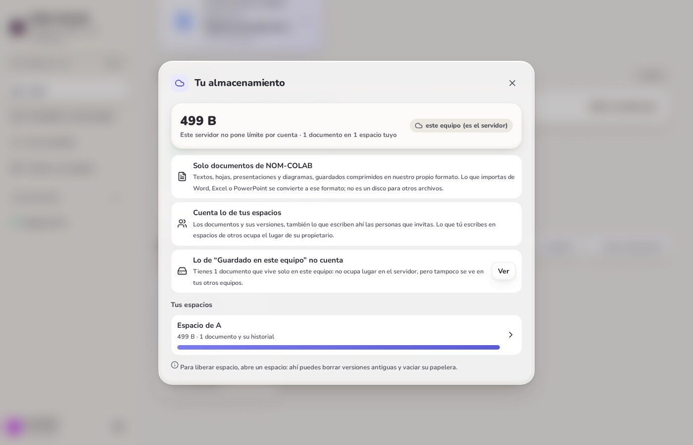

| Integrante | Puesto en WACK |
|---|---|
| Martínez Ortega Uriel Alejandro | Director general |
| Soria Flores Josep Aarón | Project manager |
| González Azuara Arturo Leonardo | Subdirector de operaciones |
| Rodríguez Esparza Diego Alejandro | Desarrollador y QA |
Las pruebas son un elemento crítico del software. Un error que llega al usuario cuesta mucho más que uno encontrado durante el desarrollo: se pierde trabajo, se pierde confianza y corregirlo obliga a rehacer partes que ya estaban terminadas. Por eso las pruebas no se dejan al azar, sino que se definen y se aplican mediante un proceso minucioso y bien planificado, que permite verificar que el software se construyó conforme a lo especificado y validar que de verdad resuelve la necesidad de quien lo usa.
Un plan de pruebas es el documento que señala el enfoque de las actividades de prueba: qué elementos se van a probar, qué características, con qué técnicas, quién es responsable de cada actividad, en qué fechas y cuáles son los riesgos asociados. Se elabora a partir de los documentos de especificación del sistema (casos de uso, reglas de negocio, diseño de la interfaz y modelo de la base de datos) y sirve de guía tanto para las pruebas manuales como para las automatizadas.
Las pruebas se clasifican, según lo definido por Pressman, en dos enfoques. Las pruebas de caja negra se llevan a cabo sobre la interfaz del software: demuestran que las funciones son operativas, que las entradas se manejan de forma adecuada y que se produce el resultado esperado, sin mirar el código. Las pruebas de caja blanca se centran en la estructura lógica interna y examinan en detalle los procedimientos y caminos lógicos del programa.
En este documento, WACK presenta el plan de pruebas que aplicó al sistema NOM-COLAB: un plan para cada tipo de prueba (unitarias, de integración, de requerimientos y de sistema: usabilidad, seguridad y portabilidad), con los resultados de su ejecución sobre la versión 0.12.1.
NOM-COLAB es una suite de documentos colaborativos con cuatro tipos de documento: texto, hoja de cálculo, presentación y diagrama. Hasta cinco personas pueden editar el mismo espacio de trabajo al mismo tiempo y los cambios se ven en tiempo real en la computadora, en el navegador del celular y en la app Android. Su rasgo principal es que funciona donde no hay internet: una computadora del salón, o incluso un teléfono, puede ser el servidor de la red local, y si la conexión se pierde, los cambios se guardan en el dispositivo y se envían solos al volver la red.
Cada espacio de trabajo tiene tres roles: Propietario, Puede editar y Solo lectura. El sistema guarda versiones, lleva una bitácora de cambios, importa y exporta archivos de Word, Excel y PowerPoint, y protege las cuentas con contraseñas cifradas y bloqueo por intentos fallidos. Está publicado en la nube (Azure App Service con Azure SQL), en un servidor propio (Raspberry Pi) y como aplicación instalable para Android.
El sistema se organiza en los módulos que aparecen en el diagrama de casos de uso (figura 2), y son los que se eligieron para aplicar las pruebas de este plan.

| Mód. | Nombre | Casos de uso |
|---|---|---|
| M1 | Gestión de cuentas | CU-01 a CU-05, CU-27 |
| M2 | Espacios de trabajo y permisos | CU-13 a CU-17 |
| M3 | Documentos, edición y colaboración | CU-18 a CU-23 |
| M4 | Almacenamiento, Android y sin conexión | CU-24 a CU-26 |
| M5 | Importar y exportar | CU-28, CU-29 |
Los casos de uso CU-06 a CU-12 pertenecían al módulo “Conoce NOM”, que se retiró del proyecto en octubre de 2026; por eso no aparecen en el plan.
WACK es una empresa dedicada al desarrollo y a las pruebas de software colaborativo. Su área de Aseguramiento de la calidad diseña, aplica y valida pruebas para comprobar que un sistema cumple lo que promete antes de que llegue a sus usuarios, con una filosofía enfocada en el usuario: cada prueba busca proteger su trabajo, su información y su tiempo.
Como empresa de pruebas, con las pruebas diseñadas, aplicadas y validadas sobre NOM-COLAB, WACK pretende obtener:
Política de calidad de WACK. Una prueba solo se da por aprobada cuando el resultado obtenido coincide exactamente con el esperado; cualquier diferencia, por pequeña que parezca, se registra como defecto. Las pruebas automatizadas se repiten completas antes de cada publicación y siempre con datos ficticios, nunca con información de usuarios reales.
WACK, como empresa consolidada en las pruebas de software, estableció qué pruebas se aplican a cada módulo de NOM-COLAB, cómo se aplican, qué se pretende comprobar con ellas y qué se espera alcanzar. El enfoque principal es de caja negra, por tratarse de una arquitectura cliente-servidor en la que lo importante es que cada función responda correctamente desde fuera; se complementa con pruebas de caja blanca solo en el motor de sincronización, donde un error interno haría perder texto sin que se note en la pantalla.
| Módulo | Pruebas que se aplican y cómo | Qué se pretende comprobar | Qué se espera alcanzar |
|---|---|---|---|
| M1 Gestión de cuentas | Requerimientos y seguridad (caja negra contra la API y la página); valores límite; unitarias del cifrado. | Que el registro valide los datos, que solo entre quien sabe la contraseña, que las contraseñas se guarden cifradas, que el sexto intento fallido bloquee y que borrar o cambiar la cuenta no deje restos. | Cero accesos indebidos y todas las entradas inválidas rechazadas con un mensaje claro. |
| M2 Espacios y permisos | Requerimientos, integración y seguridad (tabla de decisión de roles); valores límite. | Que cada rol haga exactamente lo que le corresponde, que el servidor lo haga cumplir aunque alguien salte la interfaz, y que el espacio no admita más de cinco personas. | El 100 % de las combinaciones de rol y acción con el resultado esperado. |
| M3 Documentos y colaboración | Unitarias de caja blanca del CRDT; requerimientos y sistema en el navegador real. | Que varias personas editando a la vez terminen con el mismo documento, sin perder letras, y que las versiones se puedan restaurar. | Copias idénticas en cualquier orden de llegada y latencia menor a 100 ms en la red local. |
| M4 Almacenamiento, Android y sin conexión | Requerimientos, sistema (página, celular y app) y portabilidad; valores límite. | Que lo escrito sin red llegue al volver, que la app funcione igual que la página, que se respeten los límites de espacio y que el sistema corra en distintas plataformas. | Ningún cambio perdido al cortar y devolver la red; la misma funcionalidad en todas las plataformas. |
| M5 Importar y exportar | Requerimientos y sistema con un corpus de 47 archivos reales de Office. | Que un archivo de Word, Excel o PowerPoint se abra, se vea y se descargue igual, también después de editarlo. | Fidelidad del 100 % al volver a guardar sin cambios. |
| M6 Sin Internet, cifrado y ayuda | Requerimientos y seguridad contra la API, el navegador real y el teléfono como servidor (emulador). | Que sin Internet se entre con un alias y con Internet con la cuenta de la nube, que lo editado sin conexión no pise el trabajo de otros (ramas), que el servidor guarde todo cifrado y que en un espacio cifrado de extremo a extremo el servidor no pueda leer nada. | Ningún texto en claro en el disco del servidor ni, en un espacio cifrado, en lo que recibe; ningún cambio perdido al volver la conexión. |
| Todos | Usabilidad (criterios e indicadores) y aceptación con usuarios. | Que la aplicación sea fácil de entender, de aprender y de operar, en computadora y celular. | Calificación de “Bueno” o mejor en todos los criterios. |
Siguiendo el proceso de la unidad 3, cada fase del desarrollo tiene su nivel de prueba: los requerimientos se validan al final y lo más cercano al código se prueba primero.
| Tipo de prueba | Enfoque | Qué se hace | Sección |
|---|---|---|---|
| Pruebas unitarias | Caja blanca | Se prueba cada pieza por separado: motor de sincronización y cifrado. | 6.2 |
| Pruebas de integración | Caja gris | Se prueba el servidor real con sus partes trabajando juntas: API, permisos, almacenamiento y canal en vivo. | 6.3 |
| Pruebas de requerimientos (validación) | Caja negra | Se comprueba, con la tabla de requerimientos de cada módulo, que cada uno se cumpla en el sistema terminado. | 6.4 |
| Pruebas de sistema: usabilidad, seguridad y portabilidad | Caja negra | Se ejercita el sistema completo y se califican criterios e indicadores en la escala Excelente, Bueno, Elemental o Insuficiente. | 6.5 |
| Característica | Motivo |
|---|---|
| Carga con más de 5 personas por espacio | El límite de 5 es una regla de diseño; solo se prueba que la sexta persona sea rechazada. |
| Pruebas de estrés en Azure | El plan gratuito y el crédito de estudiante son limitados; las pruebas pesadas se hacen en el servidor local, que tiene el mismo código. |
| iPhone y navegadores antiguos | No hay app para iOS; Internet Explorer ya no tiene soporte. |
| Columnas de Word vistas en pantalla | La función no está construida (se avisa al importar y se conservan al descargar). |
En este apartado se exponen las pruebas ejecutadas a los módulos elegidos. Primero se describe cómo se organizaron (responsables, entorno, calendario y criterios) y después se presenta un plan para cada tipo de prueba, con su ficha y sus resultados. Todas las pruebas se ejecutaron el 12 de noviembre de 2026 sobre la versión 0.12.1, salvo donde se indica otra fecha.
| Integrante | Puesto | Responsabilidad en las pruebas |
|---|---|---|
| Martínez Ortega Uriel Alejandro | Director general | Aprueba el plan y la decisión de liberar cada versión. |
| Soria Flores Josep Aarón | Project manager | Lleva el calendario, da seguimiento a los defectos y coordina la prueba con usuarios. |
| González Azuara Arturo Leonardo | Subdirector de operaciones | Prepara los entornos (Azure, Raspberry Pi, teléfonos) y las pruebas de portabilidad. |
| Rodríguez Esparza Diego Alejandro | Desarrollador y QA | Diseña y automatiza los casos, ejecuta las suites y documenta la evidencia. |
| Recurso | Detalle |
|---|---|
| Hardware | Laptop Intel Core i7-10610U con 16 GB de RAM y Debian 13 (servidor de pruebas); computadora de escritorio con Debian 13 y Chromium 157; Raspberry Pi 5; teléfono Samsung Galaxy A55 con Android 16; emulador de Android 15. |
| Software | OpenJDK 17.0.20, Maven 3.9.9, Python 3.13, Playwright 1.64 con Chromium, LibreWolf (Firefox), Node.js 24, LibreOffice 25.2. |
| Datos de prueba | Cuentas ficticias creadas por cada prueba en una carpeta temporal que se borra al terminar; 47 archivos reales de Office (Open XML SDK de Microsoft, Apache POI y el libro de ejemplo oficial de Excel). |
| Actividad | 13 oct | 20 oct | 27 oct | 3 nov | 10 nov | 17 nov | 24 nov |
|---|---|---|---|---|---|---|---|
| Pruebas de la primera versión | |||||||
| Base de datos, roles y Azure; teléfono real | |||||||
| Funciones de Office, carpetas y citas | |||||||
| Conversión de Office, red y seguridad (0.12.1) | |||||||
| Ejecución de este plan y registro de resultados | |||||||
| Corrección y re-prueba del defecto DEF-18 | |||||||
| Pruebas en el A55 y con 5 dispositivos reales | |||||||
| Prueba de aceptación con usuarios | |||||||
| Regresión final y entrega (27 de noviembre) |
Ejecutado Programado Entrega. Cada columna es la semana que empieza en esa fecha.
| Riesgo | Contingencia |
|---|---|
| Agotar el crédito de estudiante de Azure | Las pruebas se hacen en el servidor local; Azure solo recibe pruebas de humo. |
| Un solo teléfono Android físico | Se complementa con el emulador y con los teléfonos de los integrantes. |
| La red de la escuela bloquea el descubrimiento automático | Se prueba también escribiendo la dirección y con el punto de acceso del teléfono. |
| Falta de tiempo antes de la entrega | Se prueban primero los casos críticos; los de prioridad baja pasan al siguiente ciclo. |
Las pruebas unitarias revisan cada pieza del programa por separado, viendo su código (caja blanca). Se aplicaron a las dos piezas donde un error interno no se notaría en la pantalla pero haría perder información: el motor de sincronización y el cifrado de la copia que se guarda en el equipo.
| Responsable | Rodríguez Esparza Diego Alejandro |
| Detalle de la prueba | |
| Fecha de realización | 12 de noviembre de 2026 · Duración: 3 minutos |
| Requerimientos de la prueba | Código fuente compilado; JUnit 5 y Node.js |
| Objetivo | Comprobar que todas las copias de un documento terminan iguales sin importar el orden en que llegan los cambios ni si llegan repetidos, y que el cifrado produce exactamente los resultados de los vectores oficiales. |
| Tipo de prueba | Unitaria, caja blanca |
| Hardware requerido | Una computadora con 4 GB de RAM o más |
| Software requerido | OpenJDK 17, Maven 3.9, Node.js 24 |
| Datos de prueba | Historias de cambios generadas al azar (5 personas, 20 historias, 10 órdenes de llegada); vectores de prueba FIPS 180-2, FIPS-197, RFC 4231 y RFC 7914 |
| Procedimiento de prueba | Ejecutar mvn test y node src/test/js/cripto.test.js; comparar cada resultado con el esperado. |
| Resultado esperado | Estados finales idénticos en todas las réplicas; cifrado igual a los vectores oficiales; un byte alterado se detecta. |
| Resultado obtenido | Prueba exitosa SÍ ( X ) NO ( ) — 36 de 36 casos aprobados (repetida el 13 de noviembre con la versión 0.13.0) |
| Caso unitario | Qué comprueba | Resultado |
|---|---|---|
convergeConCualquierOrden | 5 personas, 20 historias, 10 órdenes de llegada: el resultado es idéntico. | Aprobado |
duplicadosNoCambianNada | Recibir el mismo cambio dos veces no altera el documento. | Aprobado |
empateSeResuelveIgualEnTodosLados | Dos cambios al mismo campo con el mismo reloj se resuelven igual en todas las copias. | Aprobado |
restaurarDevuelveElEstadoDeLaVersion | Restaurar una versión deja el documento como estaba. | Aprobado |
convergeEnCualquierOrdenYSinRepetir | El texto letra por letra converge y ninguna letra se repite. | Aprobado |
juntaLaEscrituraSeguidaEnUnSoloTramo | Lo escrito de corrido se guarda como un solo tramo (ahorra espacio). | Aprobado |
duenosDeParrafo | Un párrafo asignado a una persona conserva su dueño. | Aprobado |
restaurarDejaVisibilidadYFormatoComoEnLaVersion | Restaurar devuelve también el formato y lo borrado. | Aprobado |
cripto.test.js (31 casos) | SHA-256, HMAC, PBKDF2, AES-256 y AES-GCM contra vectores oficiales y contra Node; un byte alterado se detecta; otra llave no descifra. | 27 de 27 |
Las pruebas de integración arrancan el servidor real con una carpeta de datos temporal y comprueban que sus partes trabajan juntas: la API, el servicio de cuentas, los permisos de los espacios, el almacenamiento y el canal en vivo. Se usa un enfoque de caja gris: se conoce el diseño para elegir los casos, pero se prueba desde fuera, enviando peticiones como lo haría la página.
| Responsable | Rodríguez Esparza Diego Alejandro |
| Detalle de la prueba | |
| Fecha de realización | 12 de noviembre de 2026 · Duración: 4 minutos |
| Requerimientos de la prueba | Servidor nom-colab.jar 0.12.1 compilado |
| Objetivo | Comprobar que sesión, roles, bloqueo, enlaces para unirse, papelera, versiones, almacenamiento y canal en vivo funcionan juntos y que los límites del sistema se respetan. |
| Tipo de prueba | Integración, caja gris; partición de equivalencia, valores límite y tabla de decisión |
| Hardware requerido | Una computadora con 4 GB de RAM o más |
| Software requerido | OpenJDK 17, Python 3 |
| Datos de prueba | Cuentas ficticias: duena, lectora, editora, ajena, maestra, alumno1, alumno2, miembro1 a miembro5 |
| Procedimiento de prueba | Ejecutar pruebas/seguridad.py (363 casos con la versión 0.13.0) y prueba_limites.py (18 casos); cada caso compara el código de respuesta obtenido con el esperado. |
| Resultado esperado | Todas las respuestas iguales a las esperadas. |
| Resultado obtenido | Prueba exitosa SÍ ( X ) NO ( ) — 244 de 244 (el 12 de noviembre fueron 242 de 244 por DEF-18; se corrigió y se repitió el 13) |
Los límites se tomaron de las reglas del código del servidor. Para cada uno se probó un valor dentro y otro fuera del borde.
| ID | Entrada | Clase | Esperado | Obtenido | Resultado |
|---|---|---|---|---|---|
| VL-01 | Nombre de usuario de 2 caracteres | Inválida (límite) | 400 | 400 | Aprobado |
| VL-02 | Nombre de 3 caracteres | Válida (límite) | 201 | 201 | Aprobado |
| VL-03 | Nombre de 24 caracteres | Válida (límite) | 201 | 201 | Aprobado |
| VL-04 | Nombre de 25 caracteres | Inválida (límite) | 400 | 400 | Aprobado |
| VL-05 | Nombre con espacio (ana luz) | Inválida | 400 | 400 | Aprobado |
| VL-06 | Contraseña de 7 caracteres | Inválida (límite) | 400 | 400 | Aprobado |
| VL-07 | Contraseña de 8 caracteres | Válida (límite) | 201 | 201 | Aprobado |
| VL-08 | Nombre ya registrado | Inválida | 409 | 409 | Aprobado |
| VL-09 | Mismo nombre en mayúsculas | Inválida | 409 | 409 | Aprobado |
| VL-10 | Quinto intento fallido de inicio de sesión | Válida (límite) | 401 | 401 | Aprobado |
| VL-11 | Sexto intento fallido | Bloqueo (límite) | 423 | 423 | Aprobado |
| VL-12 | Contraseña correcta durante el bloqueo | Bloqueo | 423 | 423 | Aprobado |
| VL-13 | Cinco personas conectadas a la vez | Válida (límite) | 200 ×5 | 200 ×5 | Aprobado |
| VL-14 | Sexta persona intenta conectarse | Inválida (límite) | 409 | 409 | Aprobado |
| VL-15 | Agregar 1 MB de texto a un documento | Válida | 200 | 200 | Aprobado |
| VL-16 | Agregar 26 MB de una vez (tope: 25 MB) | Inválida (límite) | 400 | 200 | Rechazado |
| VL-17 | Después, agregar 10 bytes más | Inválida | 400 | 400 | Aprobado |
| VL-18 | Agregar 60 MB de una vez a un documento nuevo | Inválida | 400 | 200 | Rechazado |
Códigos de respuesta: 200 o 201 correcto · 400 dato inválido · 401 sin sesión · 403 sin permiso · 409 conflicto · 423 bloqueado.
Defecto encontrado (DEF-18), corregido el 13 de noviembre. Los casos VL-16 y VL-18 muestran que el tope de 25 MB por documento se puede rebasar con un solo envío grande. El servidor compara el tamaño de lo que ya estaba guardado en disco y no el de lo que está llegando; por eso el primer envío que cruza el límite se acepta completo (hasta 60 MB en la prueba) y solo se rechaza el siguiente (VL-17). La corrección mide lo guardado, lo que creció sin guardar y lo que llega, antes de aplicar nada; VL-16 y VL-18 ahora responden 413 y VL-17 confirma que el documento quedó sano.
Cada celda es el resultado esperado para esa combinación de rol y acción. Todas las combinaciones forman parte de seguridad.py y se obtuvieron tal como se esperaba.
| Acción \ Rol | Propietario | Puede editar | Solo lectura | Sin acceso | Sin sesión |
|---|---|---|---|---|---|
| Abrir el espacio y sus documentos | Sí | Sí | Sí | 403 | 401 |
| Escribir en un documento | Sí | Sí | 403 | 403 | 401 |
| Dar o quitar accesos | Sí | 403 | 403 | 403 | 401 |
| Crear enlace o QR para unirse | Sí | No | No | 403 | 401 |
| Mandar a la papelera | Sí | Sí | No | 403 | 401 |
| Vaciar la papelera | Sí | No | No | 403 | 401 |
El objetivo de estas pruebas es buscar discrepancias entre los requerimientos y la ejecución del software. Se basan en la tabla de requerimientos de cada módulo, tomada de la especificación de casos de uso, y comprueban que cada uno se encuentre satisfecho con el resultado final del sistema. Para cada requerimiento se indica si cumplió y la evidencia que lo respalda.
| Procedimiento de prueba | Comparar el funcionamiento del programa con el esperado según los requerimientos funcionales, desde la página y desde la API (seguridad.py, prueba_cuentas_equipo, valores límite). |
| Resultado esperado | Cumplimiento de todos los requerimientos funcionales del módulo. |
| Resultado obtenido | Prueba exitosa SÍ ( X ) NO ( ) — 10 de 10 requerimientos |
| Requerimientos | Cumplió con el requerimiento | Comentarios | |
|---|---|---|---|
| SÍ | NO | ||
| El usuario puede registrarse con nombre, contraseña y empresa opcional (CU-01). | X | Correcto. Al registrarse entra directo y ve la bienvenida. | |
| Se valida que el nombre tenga de 3 a 24 caracteres sin espacios y que la contraseña tenga al menos 8. | X | Correcto en los cuatro bordes (VL-01 a VL-07); el mensaje explica qué corregir. | |
| No puede haber dos cuentas con el mismo nombre. | X | Correcto; tampoco con distinto uso de mayúsculas (VL-08, VL-09). | |
| Solo entra quien escribe la contraseña correcta (CU-02). | X | Correcto. El mensaje de error es el mismo para usuario y contraseña, para no revelar qué cuentas existen. | |
| Al cerrar sesión, el token deja de servir (CU-03). | X | Correcto: la siguiente petición responde 401. | |
| Tras 5 intentos fallidos se bloquea el acceso 15 minutos (CU-04). | X | Correcto. Además, el dueño puede entrar desde su propia red, así que nadie lo deja fuera a propósito. | |
| Las contraseñas se guardan cifradas (CU-05). | X | PBKDF2-SHA256 con 120 000 iteraciones y sal aleatoria de 16 bytes por cuenta; la base nunca guarda la contraseña. | |
| El usuario puede cambiar y recuperar su contraseña. | X | Correcto. Al cambiarla se cierran las demás sesiones y lo guardado en el equipo no se pierde. | |
| El usuario puede borrar su cuenta. | X | Pide la contraseña y escribir el nombre; lo que escribió en espacios ajenos se queda y el nombre queda libre. | |
| Las preferencias (tema, autoguardado, movimiento) se guardan por cuenta (CU-27). | X | Correcto; al cancelar se regresa al tema anterior. | |


| Procedimiento de prueba | Crear un espacio con cuentas en cada rol y comprobar cada acción permitida y prohibida, también enviando las peticiones directo al servidor. |
| Resultado esperado | Cumplimiento de todos los requerimientos funcionales del módulo. |
| Resultado obtenido | Prueba exitosa SÍ ( X ) NO ( ) — 8 de 8 requerimientos |
| Requerimientos | Cumplió con el requerimiento | Comentarios | |
|---|---|---|---|
| SÍ | NO | ||
| El usuario puede crear espacios de trabajo y queda como propietario (CU-13). | X | Correcto. | |
| El propietario da acceso con el rol Puede editar o Solo lectura (CU-17). | X | Correcto; el cambio de rol se aplica en el siguiente cambio de esa persona, sin que vuelva a entrar. | |
| Quien tiene Solo lectura puede ver pero no editar. | X | Correcto. El servidor responde 403 aunque se salte la interfaz. | |
| Solo el propietario administra los accesos y nadie le quita el espacio. | X | Correcto (403 y 400). | |
| Una cuenta sin acceso no puede ver el espacio ni sus documentos. | X | Correcto (403). | |
| Se puede entrar con un enlace o código QR que caduca y se puede revocar (CU-16). | X | Correcto. Un enlace revocado o inventado ya no sirve, ni para entrar con apodo. | |
| Máximo 5 personas conectadas a la vez en un espacio. | X | La sexta recibe “El espacio está lleno” (VL-13, VL-14). | |
| El espacio se puede compartir en la red local sin internet (CU-14, CU-15). | X | La app encontró sola el servidor en el Wi-Fi (prueba del 16 de octubre); falta repetirlo en la red de la escuela. | |


| Procedimiento de prueba | Abrir el mismo documento en dos páginas y en la interfaz de la app, escribir a la vez y comparar; revisar cada editor en el navegador real (Chromium con Playwright). |
| Resultado esperado | Cumplimiento de todos los requerimientos funcionales del módulo. |
| Resultado obtenido | Prueba exitosa SÍ ( X ) NO ( ) — 7 de 7 requerimientos |
| Requerimientos | Cumplió con el requerimiento | Comentarios | |
|---|---|---|---|
| SÍ | NO | ||
| Se pueden crear documentos de texto, hoja, presentación y diagrama, cuyo tipo no cambia (CU-18, CU-20). | X | Correcto. | |
| El texto se edita con formato, listas, tablas y estilos (CU-19). | X | Correcto; lo escrito queda en el documento y sobrevive a recargar. | |
| La hoja calcula fórmulas (SUMA, PROMEDIO, SI, SIERROR…). | X | Correcto. Dividir entre cero muestra #DIV/0!. | |
| Varias personas editan a la vez y todas ven lo mismo (CU-21). | X | Dos páginas y la app quedan idénticas; se ve quién está conectado. | |
| Los cambios de otra persona llegan en tiempo real. | X | Mediana de 20 ms en la red local (medido el 22 de octubre), muy por debajo de la meta de 100 ms. | |
| Se muestran micro-textos de ayuda sobre los botones (CU-22). | X | Correcto en computadora (al pasar el cursor) y en celular (al mantener presionado). | |
| Se guardan versiones y se puede restaurar cualquiera (CU-23). | X | Restaurar crea una versión nueva, así que no se pierde lo anterior. | |

| Procedimiento de prueba | Cortar y devolver la red a la página y a la app con cambios pendientes (prueba_red); revisar el almacenamiento de la cuenta y los límites de tamaño. |
| Resultado esperado | Cumplimiento de todos los requerimientos funcionales del módulo. |
| Resultado obtenido | Prueba exitosa SÍ ( ) NO ( X ) — 6 de 7 requerimientos; el tope de 25 MB no se cumplió |
| Requerimientos | Cumplió con el requerimiento | Comentarios | |
|---|---|---|---|
| SÍ | NO | ||
| Lo escrito sin conexión se guarda en el equipo y se envía solo al volver la red (CU-26). | X | Correcto en la página, el navegador del celular y la app. En la computadora se comprobó contra la Raspberry: con el navegador cerrado (también de golpe) y sin Internet, la página abre, el documento se edita y al volver la red llega al servidor. | |
| Un documento con cambios sin enviar se puede reabrir sin red. | X | Correcto (el defecto DEF-13 de este punto se corrigió el 11 de noviembre). | |
| La app Android se conecta al servidor y comparte la cuenta con la página (CU-25). | X | Correcto: lo que se escribe en la app aparece en la página y al revés. | |
| El teléfono puede ser el servidor con la misma seguridad. | X | 206 de 206 casos de seguridad contra el teléfono como servidor (emulador de Android 15, 11 de noviembre). | |
| Cada cuenta ve cuánto espacio usa y su límite (CU-24). | X | Correcto: “Guardados en NOM-COLAB en Internet” con su barra; solo cuentan sus propios espacios. | |
| Los documentos se guardan comprimidos en el servidor. | X | Correcto; los guardados con versiones anteriores siguen abriendo tras reiniciar. | |
| Un documento no puede pasar de 25 MB. | X | Corregido el 13 de noviembre (DEF-18): un envío que lo rebasaría se rechaza (413) antes de aplicarse y lo escrito se queda en el equipo. | |


| Procedimiento de prueba | Importar en la página real 47 archivos de Office, editarlos, mirarlos en pantalla tecleando de verdad y volverlos a exportar; comparar el original con el resultado. |
| Resultado esperado | Cumplimiento de todos los requerimientos funcionales del módulo. |
| Resultado obtenido | Prueba exitosa SÍ ( X ) NO ( ) — 5 de 5 requerimientos |
| Requerimientos | Cumplió con el requerimiento | Comentarios | |
|---|---|---|---|
| SÍ | NO | ||
| Se pueden importar archivos .docx, .xlsx y .pptx (CU-28). | X | Los 47 archivos se abrieron sin errores de JavaScript. | |
| Un archivo que no se cambia se descarga igual que el original (CU-29). | X | Fidelidad del 100 % en los 47 archivos. | |
| Al editar un archivo importado, sale el cambio y nada más se mueve. | X | 144 de 144 ediciones correctas, revisadas con python-docx, openpyxl, python-pptx y LibreOffice. | |
| El documento importado se ve en el editor como en Office. | X | 32 de 32 revisiones en computadora y 19 de 19 en ancho de celular (hoja, márgenes, fuentes, bordes, tablas, SmartArt). | |
| Se puede exportar a PDF, SVG, HTML, Markdown y .nom. | X | Correcto; el .nom vuelve a abrir igual. | |
Además de la fidelidad sin cambios, se midió qué tanto entiende NOM-COLAB de cada archivo sin apoyarse en la copia original que guarda dentro: Word 91.9 %, PowerPoint 78.5 % y Excel 59.2 %. No es un criterio de aceptación, pero indica que la siguiente mejora debe ser el importador de Excel (formato condicional, gráficas y comentarios).
| Procedimiento de prueba | Comparar el funcionamiento con el esperado desde la API (seguridad.py, secciones 13 a 15), desde el navegador real (prueba_sin_internet, prueba_e2e, prueba_ayuda) y con el teléfono como servidor en el emulador de Android con el APK publicable. |
| Resultado esperado | Cumplimiento de todos los requerimientos funcionales del módulo. |
| Resultado obtenido | Prueba exitosa SÍ ( X ) NO ( ) — 7 de 7 requerimientos |
| Requerimientos | Cumplió con el requerimiento | Comentarios | |
|---|---|---|---|
| SÍ | NO | ||
| Sin Internet se entra al teléfono que comparte con un alias al azar, sin escribir nada; el teléfono no guarda contraseñas. | X | Correcto en el navegador y en el emulador; un alias no crea espacios ni cuentas. | |
| Con Internet se entra al teléfono con la cuenta de la nube mediante un pase firmado de 10 minutos. | X | Pase de la Raspberry aceptado por el APK; un pase usado, vencido o alterado se rechaza. | |
| Lo editado sin conexión se sube si nadie más cambió el documento; si alguien lo cambió, queda en una rama que se compara y se fusiona. | X | 22 de 22 en el navegador real, con la red cortada de verdad. | |
| El servidor guarda todo cifrado (documentos, versiones, bitácoras, cuentas y respaldos). | X | Ningún texto en claro en la carpeta de datos; sin su llave el servidor no arranca. En la Raspberry se cifraron 89 archivos y la base de cuentas. | |
| En un espacio cifrado de extremo a extremo el servidor no puede leer el nombre, los documentos ni el chat, y los miembros sí. | X | 27 de 27: otro miembro, el QR con la llave en el #, el enlace para ver y el proyector. | |
| Cada espacio tiene un chat con imágenes y archivos de hasta 2 MB, solo para sus miembros. | X | Permisos de leer, escribir y borrar correctos; el archivo se descarga aparte. | |
| Hay ayuda y avisos legales sin sesión y sin Internet, y se aceptan los términos al registrarse. | X | 18 de 18; ningún enlace roto en las 65 páginas. | |
El propósito primordial de las pruebas de sistema es ejercitar profundamente el sistema completo, verificando que se hayan integrado adecuadamente todos sus elementos y que realizan las funciones apropiadas. Comprenden las pruebas de usabilidad, de seguridad y de portabilidad. Cada criterio se califica en la escala Excelente, Bueno, Elemental o Insuficiente, y cada calificación se justifica con la evidencia obtenida.
Determina el grado de facilidad de uso del sistema, la operatividad que presenta y que el usuario entienda cómo funciona.
| Procedimiento de prueba | Recorrer las tareas principales (crear cuenta, crear espacio, compartir, escribir, calcular, presentar, exportar) en computadora, a 320, 360, 390 y 430 px de ancho, en tema oscuro y en el teléfono real; medir contraste y tamaño de los botones. |
| Resultado esperado | El sistema es fácil de usar para cualquier usuario y le da confianza para manejar el programa. |
| Resultado obtenido | Prueba exitosa SÍ ( X ) NO ( ). La interfaz es clara y se opera igual en computadora y celular; falta validarla con usuarios externos. |
| Criterios e indicadores | Descripción | Exc. | Bueno | Elem. | Insuf. | Comentario |
|---|---|---|---|---|---|---|
| Inteligibilidad | Que el usuario entienda qué hace cada parte del sistema. | X | Un color por tipo de documento, íconos con texto y avisos que dicen qué pasó y qué hacer. | |||
| Facilidad de aprendizaje | Qué tan fácil aprende a usarlo alguien nuevo. | X | Bienvenida, lista de “Primeros pasos” y consejos; falta medirlo con personas ajenas al equipo. | |||
| Operabilidad | Que el usuario pueda operarlo y controlarlo. | X | Botones de al menos 44 px, deshacer y rehacer, teclado y toque; de 320 a 430 px sin nada que se salga. | |||
| Atractividad | Que la presentación sea agradable al usuario. | X | Diseño propio con tema claro y oscuro; animaciones que respetan la preferencia de movimiento. | |||
| Herramientas de ayuda | Apoyo al usuario sobre cómo se usa el sistema. | X | Micro-textos, hoja de atajos (tecla ?) y guía de uso; no hay ayuda en video. | |||
| Cumplimiento de la usabilidad | Apego a estándares relacionados con la usabilidad. | X | Contraste WCAG AA: 12.8:1, 5.4:1 y 4.9:1 (mínimo 4.5:1). No se ha hecho una auditoría completa de WCAG. |
Validación con usuarios (programada). En la semana del 17 de noviembre, cinco personas que no conocen la app harán tareas guiadas (unirse con el QR, escribir juntas un acta, llenar una hoja de calificaciones y exportar una presentación) y contestarán el cuestionario SUS. Criterio: al menos 4 de 5 terminan cada tarea sin ayuda y el promedio SUS es de 68 o más.
Intenta verificar que los mecanismos de protección incorporados en el sistema lo protegerán, de hecho, de accesos impropios.
| Detalles de la prueba | |
| Duración de la prueba | 6 minutos (363 casos automatizados) |
| Tipo de prueba | Pruebas de sistema (seguridad) |
| Requerimientos de la prueba | Disponer del servidor 0.12.1 y de la página web |
| Procedimiento de prueba | Se intenta entrar sin sesión, con tokens inventados, con inyección SQL y con HTML malicioso; se intenta hacer con cada rol lo que no le corresponde; se piden direcciones internas a la función Investigar; se revisan las cabeceras de seguridad. |
| Resultado esperado | Los elementos del sistema cumplen con los parámetros de seguridad. |
| Resultado obtenido | Prueba exitosa SÍ ( X ) NO ( ) — 363 de 363 casos |
| Criterios e indicadores | Descripción | EX | BU | EL | IN | Comentario |
|---|---|---|---|---|---|---|
| Cifrado de contraseñas | La contraseña del usuario se guarda con algún tipo de cifrado. | X | PBKDF2-SHA256, 120 000 iteraciones y sal propia por cuenta. | |||
| Control de acceso | Cada usuario solo hace lo que su rol permite. | X | Toda la tabla de decisión se cumple en el servidor, no solo en la interfaz. | |||
| Integridad de la información | La información no se modifica sin permiso de su dueño. | X | Partes con dueño y recibos verificables; el tope de tamaño se respeta (DEF-18 corregido). | |||
| Datos cifrados durante la conexión | Los datos van cifrados entre el cliente y el servidor. | X | HTTPS en Azure y en el servidor propio. En la red local va sin cifrar y la página lo avisa. | |||
| Protección contra ataques comunes | Inyección SQL, código malicioso y lectura de direcciones internas. | X | Consultas con parámetros; HTML rechazado; 22 de 22 direcciones internas bloqueadas; cabeceras y política de contenido. | |||
| Sesiones y bloqueo | Las sesiones caducan y los intentos repetidos se bloquean. | X | Bloqueo al sexto fallo; canal en vivo con boleto de un solo uso de 30 s. | |||
| Datos guardados en el equipo | Lo que se guarda sin conexión no lo puede leer otra cuenta. | X | Copia cifrada con AES-GCM por cuenta; 27 de 27 pruebas del cifrado. |
Comentarios: el sistema protege de forma correcta las cuentas y los espacios. El tope de tamaño de los documentos (DEF-18) ya se corrigió; el área de mejora que queda es la conexión en la red local, que no puede llevar un certificado de confianza; por eso se avisa a la persona en la pantalla de entrada.
La portabilidad es la característica que posee un software para ejecutarse en diferentes plataformas: el código se reutiliza en vez de crear uno nuevo cuando el software pasa de una plataforma a otra. A mayor portabilidad, menor es la dependencia del software con respecto a la plataforma.
| Detalle de la prueba | |
| Fecha de realización | Del 16 de octubre al 12 de noviembre de 2026 (una plataforma por ciclo) |
| Requerimientos de la prueba | El mismo jar y la misma carpeta de interfaz en cada plataforma |
| Objetivo | Comprobar que NOM-COLAB funciona en distintas plataformas sin cambiar su código. |
| Tipo de prueba | Pruebas de sistema (portabilidad) |
| Hardware requerido | Laptop x86-64, Raspberry Pi 5 (ARM), Samsung Galaxy A55, servidor de Azure |
| Software requerido | Linux en x86-64 (Debian 13) y en ARM (Raspberry Pi), Android 15 y 16, Azure App Service (Java 21); Chromium, Firefox y WebView |
| Datos de prueba | Cuentas ficticias y los 47 archivos de Office del corpus |
| Procedimiento de prueba | Instalar el servidor o la app en cada plataforma, ejecutar la prueba de humo (crear cuenta, espacio y documento, editar desde dos equipos) y, donde aplica, la suite de seguridad completa. |
| Resultado esperado | La misma funcionalidad en todas las plataformas. |
| Resultado obtenido | Prueba exitosa SÍ ( X ) NO ( ) |
| Eficiencia: portabilidad | |
| Subatributos | Criterios e indicadores | Exc. | Bueno | Elem. | Insuf. | Comentario |
|---|---|---|---|---|---|---|
| Adaptabilidad | El software se adapta correctamente al sistema y cumple con su funcionamiento. | X | El mismo núcleo corre en la laptop, la Raspberry Pi (ARM), Azure y el teléfono; la interfaz es la misma en navegador y app. | |||
| Facilidad de instalación | Es posible la instalación sin necesidad de alterar ningún componente del software o el sistema. | X | El servidor trae Java incluido y arranca con doble clic. La app pide permitir “orígenes desconocidos” y Windows pregunta por el firewall. | |||
| Coexistencia | Coexiste con otro software independiente en un entorno común, compartiendo recursos comunes. | X | No instala una base de datos ni servicios; guarda todo en su carpeta y el puerto se puede cambiar si está ocupado. | |||
| Reemplazabilidad | El software es capaz de reemplazar a otro con la misma funcionalidad. | X | Abre y guarda archivos de Word, Excel y PowerPoint (100 % sin cambios), pero entiende Excel solo al 59.2 %. | |||
| Conformidad de portabilidad | Se cumple con todos los subatributos anteriormente mencionados. | X | Cumple todos; ninguno está en Elemental o Insuficiente. |
| Plataforma | Qué se probó | Resultado |
|---|---|---|
| Laptop Debian 13 (x86-64) | Todas las suites de este plan | Aprobado |
| Raspberry Pi 5 (ARM) | Servidor propio en internet con la versión 0.13.0: cifrado en reposo de los datos que ya tenía, cuenta, documento, pase firmado, chat y espacio cifrado por el túnel | Aprobado |
| Azure App Service y Azure SQL | Inicio de sesión, roles de la base y misma cuenta en computadora y celular (9 de 9) | Aprobado |
| Emulador Android 15 | APK publicable; teléfono como servidor (206 de 206 con 0.12.1; con 0.13.0, alias, pase de la Raspberry, chat y espacio cifrado: 18 de 18) | Aprobado |
| Samsung Galaxy A55, Android 16 | App 0.12.2 (la 0.12.3 solo agrega DEF-35 y DEF-36) y Chrome con toques reales (ruedita, teclado del teléfono, conectores), el teléfono como servidor (212 de 212) y sincronización con la nube propia (13 nov); falta confirmar dos casos de la app (una celda tecleada muy rápido y la fecha de entrega) | Parcial |
| Chromium, Firefox y WebView | Mismas pantallas sin errores de JavaScript, de 320 a 430 px y en horizontal | Aprobado |
Cada defecto se registra con su fecha, la prueba que lo descubrió, su severidad y su corrección. La severidad es crítica si se pierde trabajo o se expone información, alta si una función importante falla sin forma de rodearla, media si falla en un caso particular y baja si es un detalle visual. Todos los defectos cerrados tienen una prueba que comprueba que ya no ocurren.
| ID | Fecha | Descripción y corrección | Severidad | Estado |
|---|---|---|---|---|
| DEF-01 | 16 oct | La primera petición tardaba unos 5 s: el servidor solo escuchaba IPv4. Ahora escucha IPv4 e IPv6. | Media | Cerrado |
| DEF-02 | 16 oct | Un “-” dentro de una fórmula se leía como signo menos y daba un resultado incorrecto. | Alta | Cerrado |
| DEF-03 | 16 oct | Tab y Enter movían dos celdas en la hoja; ahora mueven una. | Media | Cerrado |
| DEF-04 | 16 oct | SI() mostraba el error de la rama que no tomaba; ahora lo ignora, como Excel. | Media | Cerrado |
| DEF-05 | 16 oct | La presentación no cargaba porque no encontraba el escenario. | Alta | Cerrado |
| DEF-06 | 16 oct | Las flechas del diagrama no se veían por una regla de estilo que borraba su relleno. | Media | Cerrado |
| DEF-07 | 16 oct | En Android el contenido quedaba debajo de las barras del sistema. | Media | Cerrado |
| DEF-08 | 16 oct | El indicador decía “Sincronizando” sin red; ahora dice “Sin conexión”. | Baja | Cerrado |
| DEF-09 | 22 oct | En Chrome, Edge y la app, lo escrito con el teclado solo se veía en pantalla: no se guardaba ni se sincronizaba. | Crítica | Cerrado |
| DEF-10 | 22 oct | El texto escrito después del último párrafo se perdía con un error de JavaScript. | Alta | Cerrado |
| DEF-11 | 22 oct | En el teléfono real, el botón flotante “+” quedaba fuera de su lugar. | Baja | Cerrado |
| DEF-12 | 11 nov | Al teclear en un párrafo importado de Word el cursor saltaba y el párrafo perdía su formato al descargarlo. | Crítica | Cerrado |
| DEF-13 | 11 nov | Un documento con cambios sin enviar no se podía reabrir sin conexión. | Alta | Cerrado |
| DEF-14 | 11 nov | Restablecer la contraseña borraba sin avisar lo guardado solo en el equipo. | Alta | Cerrado |
| DEF-15 | 11 nov | Quien supiera un nombre de usuario podía dejarlo bloqueado fallando a propósito. | Alta | Cerrado |
| DEF-16 | 11 nov | El canal en vivo llevaba el token de la sesión en la dirección; ahora usa un boleto de un solo uso. | Media | Cerrado |
| DEF-17 | 11 nov | Detrás de Azure todas las personas contaban como una sola red para el tope de cuentas nuevas. | Media | Cerrado |
| DEF-18 | 12 nov | El tope de 25 MB por documento se comparaba con lo ya guardado y no con lo que llega. Ahora se revisa antes de aplicar (también al crear) y responde 413. | Media | Cerrado |
| DEF-19 | 13 nov | Deshacer la creación de una figura dejaba un bloque vacío escondido en el documento. | Media | Cerrado |
| DEF-20 | 13 nov | Un documento con cambios sin enviar de una hoja o una presentación no se abría sin conexión. | Crítica | Cerrado |
| DEF-21 | 13 nov | La API no pedía no-store: el navegador guardaba documentos en claro y Firefox, sin red, daba una copia vieja. | Alta | Cerrado |
| DEF-22 | 13 nov | La ruedita cerca de la orilla (número de fila) elegía una acción sola al soltar; podía ser “Eliminar fila”. | Alta | Cerrado |
| DEF-23 | 13 nov | En el celular, tocar el número de una fila no la elegía: el toque se iba a la manija de tamaño. | Media | Cerrado |
| DEF-24 | 13 nov | En el celular, el selector de tamaño de “Insertar tabla” salía fuera de la pantalla. | Alta | Cerrado |
| DEF-25 | 13 nov | Sin páginas (lo normal en el celular) no se veían las notas al pie. | Media | Cerrado |
| DEF-26 | 13 nov | Con un grupo elegido, la ruedita ofrecía “Agrupar” y no “Desagrupar”. | Media | Cerrado |
| DEF-27 | 13 nov | Una parte dañada dentro de un archivo de Office tumbaba la exportación fiel y el .nom (salía vacío). | Alta | Cerrado |
| DEF-28 | 13 nov | Un archivo de Office sin cambios salía distinto por unos bytes si se abría en el editor (marca UTF-8 y sangría del XML). | Baja | Cerrado |
| DEF-29 | 13 nov | En la red del salón (http) se decía “copiado” sin copiar, también con el código de recuperación. | Alta | Cerrado |
| DEF-30 | 13 nov | “Pegar” de la ruedita no funcionaba en la red del salón (http). | Media | Cerrado |
| DEF-31 | 13 nov | El orden “solo para mí” movía el encabezado si la fila 1 tenía una fórmula. | Media | Cerrado |
| DEF-32 | 13 nov | Elegir una fila, una columna o todo corría la hoja hasta la última celda. | Baja | Cerrado |
| DEF-33 | 13 nov | Las manijas de selección de Android tapaban la ruedita del texto. | Baja | Cerrado |
| DEF-34 | 13 nov | La bienvenida, al desvanecerse, se tragaba el primer clic. | Baja | Cerrado |
| DEF-35 | 13 nov | Si el navegador se cerraba de golpe (se va la luz, se traba), al volver sin Internet pedía iniciar sesión: Chromium no alcanzaba a guardar la sesión de localStorage. Ahora una copia queda junto a la llave de la bóveda (IndexedDB) y se recupera; cerrar sesión la borra. | Media | Cerrado |
| DEF-36 | 13 nov | Al cerrar una pestaña, el servidor volvía a revisar la sesión del canal en vivo con el boleto ya usado y dejaba un error en su bitácora. | Baja | Cerrado |
| DEF-37 | 13 nov | Al volver a abrir un documento de un espacio cifrado salían letras raras: el servidor no guardaba la marca que dice qué letras van cifradas. | Alta | Cerrado |
| DEF-38 | 13 nov | En un espacio cifrado se podía poner un nombre en claro a un documento con «Renombrar» desde la API. | Media | Cerrado |
| DEF-39 | 13 nov | Un archivo de casi 2 MB no cabía en el chat de un espacio cifrado (al cifrarse crece un tercio). | Baja | Cerrado |
| DEF-40 | 13 nov | El enlace para ver un documento cifrado mostraba el nombre cifrado del espacio. | Baja | Cerrado |
| DEF-41 | 13 nov | El dueño del teléfono que comparte (un alias) veía la opción de espacio cifrado, que no puede usar. | Baja | Cerrado |
| Suite | Casos | Aprobados | Avance | Resultado |
|---|---|---|---|---|
| Unitarias (JUnit y cifrado) | 36 | 36 | 100 % | |
| Integración y seguridad (API) | 363 | 363 | 100 % | |
| Seguridad con el teléfono A55 como servidor | 212 | 212 | 100 % | |
| Valores límite | 18 | 18 | 100 % | |
| Office sin cambios (90 archivos reales de Microsoft) | 90 | 90 | 100 % | |
| Ediciones de Office | 144 | 144 | 100 % | |
| Office por la interfaz (computadora y celular) | 180 | 180 | 100 % | |
| En pantalla (computadora y celular) | 51 | 51 | 100 % | |
| Red: página, celular y app | 24 | 24 | 100 % | |
| Cuentas y datos del equipo | 61 | 61 | 100 % | |
| Funciones de la interfaz (computadora, celular y Firefox) | 501 | 501 | 100 % | |
| Sin Internet y ramas (navegador real) | 22 | 22 | 100 % | |
| Extremo a extremo y chat (navegador real) | 27 | 27 | 100 % | |
| Ayuda y legal | 18 | 18 | 100 % | |
| El teléfono como servidor (emulador, APK publicable) | 18 | 18 | 100 % | |
| Total | 1765 | 1765 | 100.0 % |
| Módulo | Requerimientos | Cumplió | No cumplió |
|---|---|---|---|
| M1 Gestión de cuentas | 10 | 10 | 0 |
| M2 Espacios de trabajo y permisos | 8 | 8 | 0 |
| M3 Documentos, edición y colaboración | 7 | 7 | 0 |
| M4 Almacenamiento, Android y sin conexión | 7 | 7 | 0 |
| M5 Importar y exportar | 5 | 5 | 0 |
| M6 Sin Internet, cifrado y ayuda | 7 | 7 | 0 |
| Total | 44 | 44 (100 %) | 0 |
Cada caso de uso tiene al menos una prueba, como pide el objetivo del proceso de pruebas.
| Casos de uso | Pruebas que los comprueban | Cobertura |
|---|---|---|
| CU-01 a CU-05, CU-27 | Requerimientos M1; integración (VL-01 a VL-12, estados de la cuenta); seguridad; unitarias del cifrado | Completa |
| CU-13, CU-16, CU-17 | Requerimientos M2; tabla de decisión de permisos; VL-13 y VL-14; seguridad | Completa |
| CU-14, CU-15 | Requerimientos M2 (red local); portabilidad: el A55 como servidor con la app, una laptop y un escritorio a la vez (13 nov). Falta el descubrimiento por UDP en la red de la escuela | Parcial |
| CU-18 a CU-23 | Requerimientos M3; unitarias del CRDT; prueba de red; usabilidad | Completa |
| CU-24 | Requerimientos M4; VL-15 a VL-18 (DEF-18 corregido) | Completa |
| CU-25, CU-26 | Requerimientos M4; prueba de red; portabilidad | Completa |
| CU-28, CU-29 | Requerimientos M5; fidelidad, ediciones y pantalla | Completa |
| Funciones de las fases 13 a 15 (amplían CU-02, CU-13, CU-16 a CU-19, CU-21, CU-26) | Requerimientos M6; seguridad (secciones 13 a 15); sin Internet; extremo a extremo; ayuda; el teléfono en el emulador | Completa |
Brooke, J. (1996). SUS: A “quick and dirty” usability scale. En P. W. Jordan, B. Thomas, B. A. Weerdmeester y I. L. McClelland (Eds.), Usability evaluation in industry (pp. 189–194). Taylor & Francis.
Institute of Electrical and Electronics Engineers. (2008). IEEE Standard for Software and System Test Documentation (IEEE Std 829-2008). IEEE.
Institute of Electrical and Electronics Engineers. (2016). IEEE Standard for System, Software, and Hardware Verification and Validation (IEEE Std 1012-2016). IEEE.
International Organization for Standardization. (2011). Systems and software engineering — Systems and software Quality Requirements and Evaluation (SQuaRE) — System and software quality models (ISO/IEC 25010:2011). ISO.
International Organization for Standardization. (2021). Software and systems engineering — Software testing — Part 3: Test documentation (ISO/IEC/IEEE 29119-3:2021). ISO.
International Software Testing Qualifications Board. (2023). Certified Tester Foundation Level Syllabus (v4.0). ISTQB.
Pressman, R. S. (2010). Ingeniería del software: un enfoque práctico (7.ª ed.). McGraw-Hill.
Sommerville, I. (2011). Ingeniería de software (9.ª ed.). Pearson Educación.
World Wide Web Consortium. (2023). Web Content Accessibility Guidelines (WCAG) 2.2. W3C.
WACK. (2026). NOM-COLAB: especificación de casos de uso, bitácora del proyecto y pruebas automatizadas [Repositorio de código]. Equipo 6, grupo 5IM7, CECyT 9.
Como empresa de pruebas, WACK aplicó a NOM-COLAB un plan para cada tipo de prueba: unitarias, de integración, de requerimientos y de sistema (usabilidad, seguridad y portabilidad). Se ejecutaron 1765 casos, de los cuales se aprobaron 1765 (100.0 %), y de los 44 requerimientos revisados se cumplieron los 44. Cada caso de uso quedó cubierto por al menos una prueba.
Las pruebas mostraron que la seguridad es el punto más fuerte del sistema: los 363 casos de seguridad y permisos se aprobaron, las contraseñas se guardan cifradas, ningún rol puede hacer más de lo que le corresponde aunque alguien intente saltarse la página, el servidor guarda todo cifrado en su disco y, en un espacio cifrado de extremo a extremo, ni el propio servidor puede leer lo que escriben sus miembros. También quedó demostrado lo que distingue al proyecto: varias personas pueden escribir a la vez sin pisarse, lo escrito sin conexión llega al volver la red y los archivos de Office se descargan igual que como entraron.
El plan además cumplió su objetivo de encontrar defectos antes que el usuario. Durante el desarrollo se registraron 41 defectos; quince eran críticos o altos, y varios de ellos habrían hecho perder trabajo a quien usa la aplicación. El último, DEF-18, lo descubrieron las pruebas de valores límite de este plan: el tope de 25 MB por documento se puede rebasar en un solo envío. Se corrigió el 13 de noviembre, junto con dieciséis defectos más (DEF-19 a DEF-34) que salieron al probar cada función en equipos reales: el Samsung A55 (la app y Chrome), una computadora de escritorio y la nube propia en la Raspberry Pi. Los dos últimos (DEF-35 y DEF-36) aparecieron ese mismo día al comprobar a mano que la página abre sin Internet después de cerrar el navegador de golpe. Los cinco últimos (DEF-37 a DEF-41) los encontraron las pruebas nuevas del cifrado de extremo a extremo, antes de publicar la versión 0.13.0; el más serio hacía ilegible un documento cifrado al volver a abrirlo.
Con estos resultados, la decisión de WACK es liberar la versión 0.13.0, que corrige todos los defectos registrados, y completar en la semana del 17 de noviembre lo que falta: cinco dispositivos en el mismo espacio en la red de la escuela y la validación con usuarios que nunca han usado la aplicación. Las suites de la API, de la página en computadora, de red, de cuentas, de valores límite y las nuevas se repitieron sobre la versión final 0.13.0; las de Office y las de celular y Firefox son de la 0.12.3 (13 de noviembre), porque esa parte no cambió. Una prueba solo tiene valor si se vuelve a ejecutar después de cada cambio.